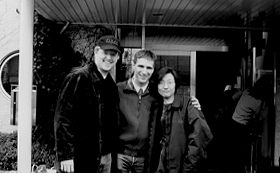
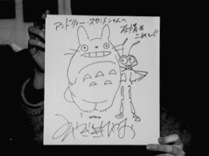

99.1.5（火）
・仕事始め。といってもメインスタッフは正月返上で仕事をしていたので、社内の空気に休み明けのにおいが感じられない。
・朝一から制作会議。高橋さんから正月中のメインスタッフの動向、今年の予定（ひたすら「となりの山田くん」完成に精進するのみ）が報告される。
・絵コンテ、シーン14-7 185秒、シーン3-2の続きCUT79～96まで101秒アップ。
99.1.6（水）
・新人動画マンにも「ホーホケキョ となりの山田君」に入ってもらうため、斎藤君から動画作業の注意事項の説明会が約一時間半かけて行われる。実線、内線、輪郭線の各動画、合成、組み線について、それぞれ注意するポイントを分かりやすく解説。
99.1.7（木）
・保田さん、高橋さん、奥井さん、高橋さん、神村氏等が集まって仕上げの今後の進行についての話し合いが行われる。このままの状態で行けば外注スタジオにけっこう頼らなければいけない事態になりそうである。またその際スキャンはどうするのか等突っ込んだ内容も検討される。
・二階作画ルームの一部で何故かライトテーブルが点かなくなる事態が続出、原因がまったくわからないため、「単に老朽化」「誰かの陰謀」「家まで電気を引っ張っているヤツがいる」「のろい」等、いろいろな憶測が飛び交っている。取り合えずグローランプを交換して復旧。
99.1.8（金）
・ライトテーブル問題で、業者が二階の問題箇所の電圧を何カ所か計ったところ、83Ｖ程度しか無いことが発覚。原因は、エアコンで床付近が寒いので電気膝掛けを使っているとか、タコ足配線のしすぎだとか、いくつもありそう。後日もっと詳しく調べてもらうことに。
・今日から鈴木プロデューサー、高橋さん、門屋さん等が、熱海で宣伝対策合宿に入る。
・原画アップまであと数カ月を残すのみとなり、神村氏が意気込みを表すため、パソコンのデスクトップに「背水の陣」なる壁紙を貼る。たまたま制作部でそれを見た田辺氏は「は～」とため息をつきながらメインスタッフコーナーへ去って行った。
・風邪で制作部石井君は早退。各署で風邪による欠勤、早退が続いてる。
99.1.9（土）
・五時からラッシュチェックが行われるが、のっけから妙に色がおかしい。と思ったら、プロジェクターその他の設定が狂ってしまっていたのが原因らしい。
・六時半すぎから、今回のラッシュでまたしても問題になった口の中の処理について、高畑監督、奥井さん、動画チェック斎藤君らが集まって話し合いが行われる。
・○畑○崎作品研究所から近藤喜文さんの追悼文集（一応同人誌）が送られてくる。なかなか読みごたえがある素晴らしい本に仕上がっているので、社内で注文したいと問い合わせ殺到。
99.1.11（月）
・高橋さん、奥井さん、望月さん等が某スタジオにデジタルペイントのお手伝いをお願いしに行く。
・二時より制作会議が行われる。
・三時よりシーン9-5、12-1の色打ち合わせが行われる。
・最近胃の調子が悪いと言っていた○○さんが病院で胃カメラを飲んだところ、胃潰瘍が発見される。薬を飲んでいれば直る程度のものだそうで、一安心。
99.1.12（火）
・シーン7-4、5-9の色打ちが行われる。
・夜、宮崎監督が突然来社し、高畑監督になにやら話しをしていると思ったら、村塾の特別講義の依頼に来たとのこと。前回講義をした押井さんは「アニメから離れているから話すことないよ」と言いながら夜の９時まで話し続けたということだし、何を話すのか興味深いところ。「聞きて～」と言っているスタッフもアリ。神村氏のみ「ラッシュはどうしよう。スケジュールが…」と渋い顔。
99.1.13（水）
・以前から問題になっていた、ダビングをシーン毎にするのか、今まで通りロールでするのかが制作の中でクローズアップされるが、手間や金銭的な面からどう考えてもロール別にした方に良いという結論に達する。
・先日小豆島出身のコミックボックス三好氏が、正月休みに田舎ヘ帰ったお土産に持ってきてくれた讃岐うどんを茹で、小豆島産の醤油で汁を作り田辺氏と食べる。あまりの旨さに大興奮。恐るべき讃岐うどん。
99.1.14（木）
・三時から山口さんの作打ちが行われる。シーン3-2のラストパート。
・四時からシーン13-1、13-7の色打ちが行われる。
・五時から今まで色が点いた部分の通しラッシュが行われる。プロジェクターの色が安定していないのでは、との懸念が出るが、今月末に全て解決する手筈にはなっているとのこと。その後、一度35mmフィルムにしてチェックしてみることに。
・七時から倉田さんの作打ちが行われる。シーン1-0、1-1。シーン1-0は特殊な処理にするため、マック版ＱＡＲで試しの画面を作ることになる。斎藤氏が早速作業に着手。
99.1.15（金）
・成人式で休日、ではなくて出勤日。一応今日から完成まで祭日は無しということになる。そのうち日曜日もなくなる運命にある…。
・釜山のファンタスティック映画祭で「人狼」「平成狸合戦ぽんぽこ」「紅の豚」が上映されたらしい。と制作部で話しをしていたら某氏が「それって動物アニメ特集か」とぽつり。
・夕食に会社からピザが支給される。取り合えず今日仕事をしているのは約四十人強といったところなので、一寸余裕を持って三人で一枚として計十四枚を注文するが、みんな飢えていたのかあっと言う間に無くなってしまう。ところでちょうどその時打ち合わせをしていた高畑監督は「多めに注文したからどうせ余るだろう」と高を括っていたため、ピザにありつけず。
99.1.16（土）
・昨年1月14日にジブリを退社した宮崎監督がスタジオジブリ所長として復帰。スタッフは「所って何処だ？」と悩んでいる。
・高橋制作部長が、宮崎監督がジブリに復帰する対策としての、机整理も兼ねた制作電脳計画（単に散らかっていると怒られるのでかたづけるだけ）を進めている。その際ごちゃごちゃに繋がれたハブを机の下に隠そうと色々考えていたところ、コンピュータに強い石井君が「両面テープで机の下に固定すればOK！」と提案。が、他の制作陣は「重いから無理だよ」とその意見に懐疑的。「自分の家でやっているので絶対大丈夫、落ちたらジュースおごります」と意地になった石井君だが固定後約三分で落下し、面目丸潰れ。高橋さん曰く「制作電脳化計画、両面テープに破れる」
・今まで上がった分のラッシュをバーにて全スタッフに見せる。
・一寸遅れたが、鏡開きが行われ、社員にお汁粉が配られる。満腹デカの異名を取る神村氏が日頃のストレス発散にと、まる餅20個を平らげる。
・高畑監督が東小金井村塾の講義を行う為二馬力へ。
99.1.18（月）
・シーン4-5、9-8の色打ち合わせが行われる。
・口の中処理のリテークラッシュチェックが行われる。ＯＫは出ず。
・朝から制作会議が行われ、残りの作業について様々な報告がなされる。最近各部署の上がり枚数が急速に増加しているが、それでもこれから処理しなければならない動画枚数を改めて計算すると、とんでもない枚数になっている。高橋さんから「全体像を把握して仕事をせよ」との指示がでる。
・絵コンテシーン7-9、24CUT141秒分が終了。これで残りは二つのエピソードのみ。
99.1.19（火）
・稲村氏、シーン14-7の作打ちが行われる。益岡徹氏の大熱演のシーンだ。
・原画をお願いするため、神村氏が某スタジオを訪問し、○○の作監○○氏等と会う。○○氏は一寸まだ分からないが、△△氏は二月から手伝ってくれることに。
99.1.20（水）
・Ｔ２スタジオのスタッフとテレコム竹内さん来社。デジタルペイントを手伝ってもらう為の打ち合わせ。その後竹内さん、高畑監督がアニメーション業界の現状についてしばらく話し合う。
・神村氏が原画さん個人面談（？）用のグラフをエクセルで作る。予想してたとはいえあまりの低空飛行に愕然（もちろん早い人もいるけど…）。
・「山田くん」は作業が非常に繁雑なため、制作のチェックノートも膨大な数にのぼっており、まだ増えそうな様相を呈している。「いったいどうなるんじゃ～」と気分もハイになった夜中に神村氏、居村氏が大笑い。
・深夜、村塾で使う資料を借りに、荻窪にあるアニドウの事務所ヘ向かう。並木さんは相変わらず元気そう。
99.1.21（木）
・夕方バーにて「バグズライフ」のちょいと長めの予告編を上映する。日本ではオールデジタル映画というとすぐＣＧ技術ばかりに注目が集まるが、ピクサーの作品を見ると、映画の基本はやっぱり脚本演出だと再認識させられる。
・音響監督の若林氏、録音（テレセン副社長）の井上氏来社。音響スケジュールの打ち合わせ。表になったスケジュールを見て高橋さんが「いや～大変ですよこれは」と思わず唸ったら、井上さんが「今頃気付かないでよ～」と嘆いていた。
99.1.22（金）
・朝から社員全員の健康診断が行われる。昨年春から「ツール・ド・信州」で少しでもまともな成績を収めるべく、暴飲暴食をやめ、トレーニングに励んでいたら、去年より勝手に体重が７キロ近く減っている。その為、保健所の人に「何処か体の調子が…」と疑われてしまった。
・神村、高橋＆高畑さんが某氏に会いに出かける。もちろん用件はさらに多くに原画をお願いに行くこと。
・松瀬氏、シーン3-2の７CUT分、シーン1-3の７CUT分作打ち。
99年1月23日（土）
・朝11時半に「バグズライフ」の監督の一人アンドリュー・スタントン氏が、ピクサーの同僚イワン・ジョンソン（スーパーバイジング・レイアウト・アーティスト）、小西園子（アニメーション・サイエンティスト）両氏と来社。宮崎監督の案内で社内見学、ジブリスタッフとの質疑応答、「ホーホケキョ となりの山田くん」の予告編鑑賞等を行う。スタントン氏がピクサーの映画の作り方を「毎朝、メインスタッフ25人が試写も含め二時間のディスカッションを行っている。それらの意見を取り入れジョン・ラセターが全てを決めている」と語っていたが、やはり作品をぐいぐい引っ張っていく人がいることが、面白い作品を作る大前提か、と納得。
・山田氏、シーン14-3作打ち。
・シーン5-1、4-8色打ち合わせ。
・シーン4-7、9-1、今までのリテークのラッシュチェック。今まで問題になっていた口の中処理の方向性がようやく定まる。


99.1.25（月）
・シーン4-13、9-1の色打ち合わせが行われる。
・土曜日の金曜ロードショウで放送された「もののけ姫」の視聴率が35.1%となったと社内に張り出される。90年代に放送された劇映画の視聴率では史上最高の数字だそうな。ありがたや、ありがたや…。
・みんなの中にある「どのくらいやって行けば終わるのか」という漠然とした不安感を払拭するため、デスク神村氏が、今後制作終了までの動画、仕上げ上がりの予定表を作成する。
99.1.26（火）
・矢野顕子さん演ずる藤原先生登場シーンのスポッティングシートが上がってくる。
・今日から外注さんの椎名さんが動画IN。
・鈴木さんが新しい携帯電話を購入。早速メカに詳しい制作石井君が「ケータイ編集王」を使って古い携帯に入っていたデータを新しい携帯に移し変える作業に入ったのだが、制作の先輩たちは面白がって「間違ってデータを消したらクビだ～」「停電だ～」とか言いながら石井君を苛めていた。
99.1.27（水）
・デジタルペイントを手伝ってくれるT2のスタッフが来社。保田さんと打ち合わせを行う。
・CUT2-2-49の動画が行方不明になり、制作一同大あわて。深夜、作画スタッフが帰った後に机を密かに調べたら、某原画マンの机から無事発見される。制作の一人が参考にとその原画マンに貸したのを忘れていたらしい。
・ジブリ一の大食いで有名な制作デスクの神村氏が、夕食に神楽坂飯店で、「餃子100個食べたらタダ」に挑戦する。この忙しい時期に高畑監督等に「がんばってください」と送り出された手前失敗は許されない、と意気込んで行ったものの、やはり100個の壁は厚く、65個で断念。失意のうちに帰社する。因みに奥田さん等６人の応援団は、必死に餃子を食べる神村氏の横で中華のコース料理を満喫していた。またこの挑戦の模様は、ビデオ録りされ、神村氏には今後も何度か挑戦してもらって、来年の忘年会で「神村氏の挑戦シリーズ」と題した作品にすることが門屋氏から提案されている。
99.1.28（木）
・大森さん来社。音楽打ち合わせが行われる。
・深夜、高橋、神村、川端、望月、田中、居村等が金魚鉢にこもり、どうすればスケジュール内に残りの動画を効率的に上げることが出来るかを話し合う。問題点を各自持ち帰り、明日深夜もう一度打ち合わせ。
99.1.29（金）
・朝10時からイマジカにて、35ミリによるフィルムチェックが行われる。特に問題は無し、と思われたが、その後ジブリに戻ってメインスタッフによるチェックが終了した後、キャラクターの輪郭線が一寸きついのではないか、という意見が高畑監督、保田さんから出、いくつかテストを試みることに。
・深夜再び会議が行われる。各部署にスピードアップを促す為の作戦会議。とにかく今作品は、ラフ原画、原画、ＱＡＲ、作監、実線動画、実線スキャン、内線作監、内線動画、輪郭線動画等々、制作過程が複雑なため、各部署で保留されているCUTを合わせるとかなりの枚数になっている。それぞれの保留枚数、アップまでの作業量、人数等説得力のある数字を提示し、催促していくしかない、との結論に達する。
99年1月30日（土）
・神村氏が若手原画マンを一人ずつ会議室に呼んで、ペースアップのお願いをする。みんな早く上げなきゃという意識は持っているのだが…。
・制作部の床で釣りエサのミミズ状態になっていた、コンピュータの配線を業者の人にお願いして整理してもらう。ようやく神村氏のイスが自由に動くようになる。
・動画のダビッド・エンスィナス氏がフランスに帰り、向こうでアニメーションの仕事をするため今日でジブリを退社。明日は吉祥寺で盛大な送別会を行う予定。
| 次のページへ |
| 日誌索引へ戻る |